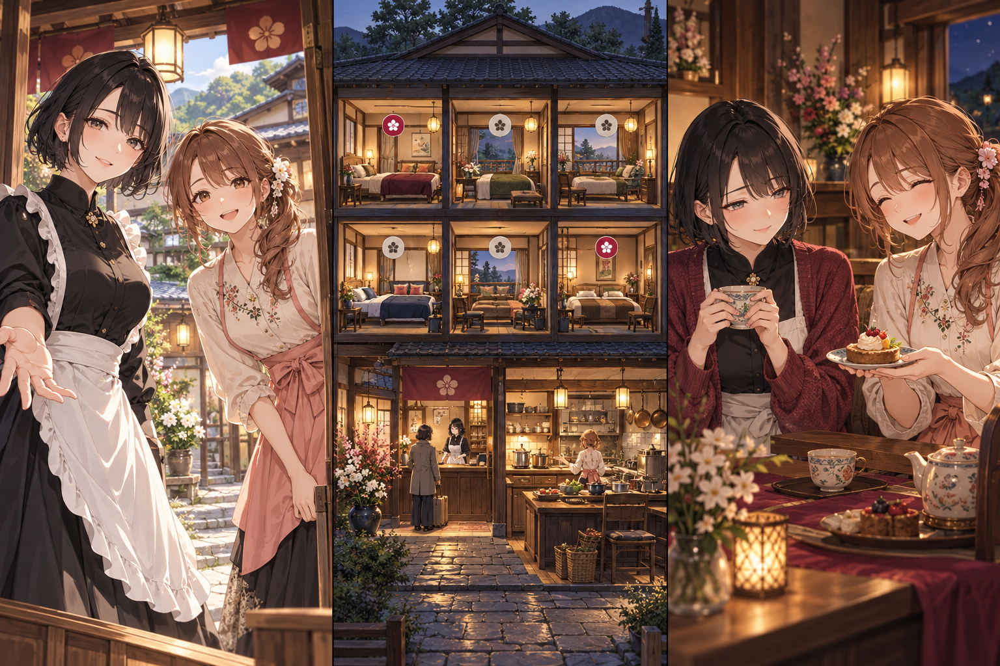

線路の砦
物流シミュレーション × ターン制戦術
同じレールを輸送路か防壁にする。守るために閉じると、次の弾薬が届かない。
6ページの企画書PDF · 編集元 · プレイ画面モック · 交流画面モックスマホWeb・片手縦持ち・1回10〜20分。ジャンルの掛け算と、成人ヒロインとの濃い交流を比較する企画資料です。掲載画面は未実装のイメージです。
物流シミュレーション × ターン制戦術
同じレールを輸送路か防壁にする。守るために閉じると、次の弾薬が届かない。
6ページの企画書PDF · 編集元 · プレイ画面モック · 交流画面モック
相棒育成 × ターン制ステルス
成功した潜入手段から習慣を選び、次の任務の予測できる自律行動にする。
6ページの企画書PDF · 編集元 · プレイ画面モック · 交流画面モック
片手探索アクションRPG × 園芸
足場の枝を刈って装備材料にする。移動の余地と戦う備えを同じ枝から選ぶ。
6ページの企画書PDF · 編集元 · プレイ画面モック · 交流画面モック
宿屋経営 × 条件交渉
現金だけでなく、実際の空室・食数・将来予約を差し出す交渉。今夜の売上が明日の行動余地を削る。
6ページの企画書PDF · 編集元 · プレイ画面モック · 交流画面モック
骨董店経営 × 証拠推理
根拠を結んで鑑定し、公表する範囲を決める。真相の公開が、売り物と自分の在庫の相場を同時に動かす。
6ページの企画書PDF · 編集元 · プレイ画面モック · 交流画面モック
陣取り戦略 × 競売
領地を担保に入札額を増やすと、生産が停止。領土の拡大と、今の国で暮らすための供給が直接ぶつかる。
6ページの企画書PDF · 編集元 · プレイ画面モック · 交流画面モック